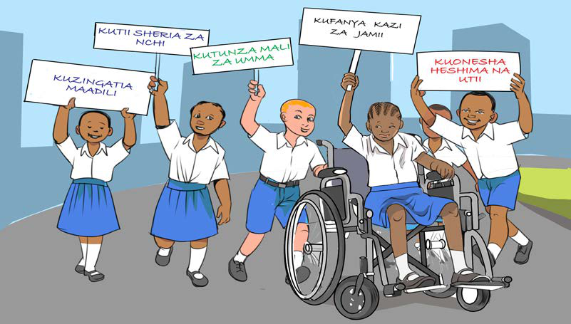

Kimsingi, watoto wana wajibu wa kutekeleza katika jamii na Taifa. Sheria ya mtoto na Katiba vinaeleza wajibu wa mtoto katika familia, jamii na Taifa. Hii ni kwa sababu mtoto ni sehemu ya jamii na Taifa. Kielelezo namba 3, kinawasilisha watoto wenye mabango yenye baadhi ya wajibu wa mtoto.

Kielelezo namba 3: Wajibu wa mtoto katika jamii na Taifa
Kupenda kufanya kazi
Mtoto ana wajibu wa kufanya kazi katika jamii na Taifa kulingana na umri na uwezo wake. Mtoto anapofanya kazi hujenga mshikamano na jamii na Taifa lake. Pia, humfanya mtoto kukubalika katika jamii yake. Jamii zote hukemea uvivu na kutokupenda kufanya kazi. Hivyo, ni wajibu wa mtoto kupenda na kufanya kazi ili kuwa na tabia zinazokubalika katika jamii na Taifa. Kielelezo namba 4, kinawasilisha watoto wakishiriki kusafisha mazingira katika jamii.
Fanya uchunguzi, kisha andika kazi ambazo mtoto anaweza kushiriki katika jamii inayomzunguka.